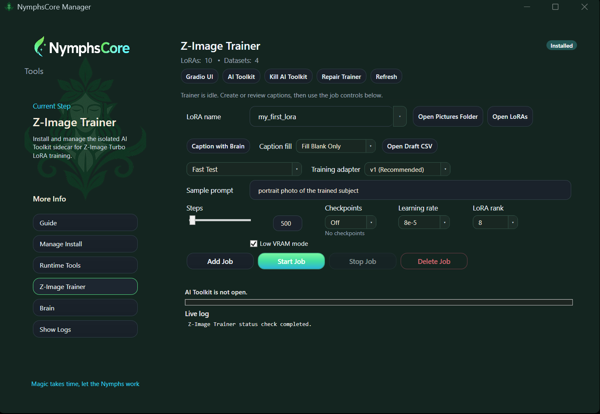

Use the trainer to prepare the dataset, choose the settings, add the job, and start the run.
1. Set up the training job.
This is the part that comes before job creation. In the Manager, this is also where you prepare the dataset with Open Pictures Folder, then choose the preset, adapter, sample prompt, steps, checkpoints, learning rate, rank, and whether to use Low VRAM mode. This section explains the NymphsCore Manager screen shown below.

The Manager screen is the NymphsCore front end. It simplifies the flow into dataset, optional captions, settings, then Add Job and Start Job.
LoRA name
Open Pictures Folder
Open LoRAs
Caption with Brain
Caption fill
Open Draft CSV
Preset
Training adapter
Sample prompt
Steps
Checkpoints
Learning rate
LoRA rank
Low VRAM mode
Add Job
Start Job
Stop Job
Delete Job
Files and dataset
LoRA name
This is the training or job name. Keep it short and specific so you can recognize the output files later.
Open Pictures Folder
This is where dataset prep happens. It opens the image folder for the current LoRA name so you can add, remove, or replace the actual training images.
Open LoRAs
Opens the output folder where finished LoRAs and checkpoints end up.
Captions
Caption with Brain
Drafts one editable caption per image into metadata.csv. It needs a downloaded local Brain vision model first. A good recommendation is Qwen2.5-VL, with its matching mmproj file beside the GGUF.
Caption fill
This only controls how Caption with Brain writes draft rows. Fill Blank Only keeps anything you already wrote. Overwrite All Drafts regenerates everything.
Open Draft CSV
Opens the editable caption sheet. When you later click Add Job, the app mirrors those captions into the per-image .txt files that AI Toolkit actually trains from.
Style captions
Describe the content normally instead of padding every line with repeated style labels. The images should teach the rendering style.
Presets and core controls
Preset choice
Fast Test is the quickest path when you just want to see whether the LoRA is learning at all. Baseline is the safest normal first run. Style is the normal style preset. Strong Style is the follow-up when the normal style run still feels too polite.
Preset defaults
Fast Test sets 500 steps, checkpoints off, 1e-4 learning rate, rank 8. Baseline sets 3000 steps, 4 checkpoints, 1e-4 learning rate, rank 16. Style uses the same numbers as Baseline but switches to style mode. Strong Style pushes that to 5000 steps with 4 checkpoints and rank 16.
Adapter choice
Stay on v1 (Recommended) for the first serious run. Use v2 (Experimental) only after the normal path is behaving and you actually want a comparison.
Sample prompt
AI Toolkit uses this to generate preview samples while the job is running, so it should reflect the kind of image you actually want to judge during training.
Steps
This is the total training length. A practical starting point is usually 3000 for a normal run, with 500 used only for a quick signal check.
Checkpoints
This controls how many intermediate save points the Manager keeps available for you to test. Off means you only care about the final output. 2, 4, or 8 gives you fallback versions.
Learning rate
This is how hard each step pushes the LoRA. A solid starting point for Z-Image Turbo is still 1e-4. The Manager also exposes 8e-5 and 5e-5 if you want a gentler run.
LoRA rank
Lower ranks are lighter and can be enough for quick tests. Higher ranks can hold more detail, but they are not automatically better. In this trainer, rank 8 is the quick-test setting and rank 16 is the normal default.
Low VRAM mode
Turn this on when your GPU is the bottleneck and the normal path does not fit comfortably. The tradeoff is speed.
Job buttons
Add / Start / Stop / Delete
Add Job writes the current settings into the real AI Toolkit job. Start Job runs that saved job. Stop Job stops the active run. Delete Job removes the saved job entry.
Which preset to start with
Use Fast Test when you just want to see whether the dataset is learning anything at all. Use Baseline when you want the safest normal first run.
2. Click Add Job, then Start Job.
These are two separate steps. Add Job is the commit point. Start Job is the run point. The app is designed around that distinction.
Add Job: prepares the dataset support files, refreshes metadata.csv, mirrors the captions into per-image .txt files, writes the AI Toolkit YAML job, writes the LoRA metadata, and registers the job with the official AI Toolkit UI.
Start Job: queues and starts the saved AI Toolkit job. If you changed settings after the last Add Job, the app will stop you and tell you to apply those pending changes first.
Real Flow
1. Pick the dataset / LoRA name
2. Open Pictures Folder and add the images
3. Optionally use Caption with Brain
4. Review metadata.csv if needed
5. Choose preset, adapter, sample prompt, and training settings
6. Click Add Job
7. Click Start Job
3. Use samples and checkpoints to judge the run.
The first run does not need to be perfect to be useful. What matters is whether the samples and checkpoints show the LoRA moving in the right direction. That is the signal you use to decide whether to keep, adjust, or rerun.
What success looks like: the job finishes cleanly, writes checkpoints or a final LoRA, and the training samples visibly move toward the intended character, style, or concept. Halfway there is still useful information.
What weak results usually mean: the dataset may need to be cleaner, the style signal may need a stronger preset or longer run, or the sample prompt may not be showing the thing you actually care about.
What overcooked results usually mean: do not just crank it harder. Look for noisy captions, mixed images, or a dataset that is trying to teach too many different things at once.
Checkpoint testing: start with the later checkpoint or final file first, then compare backward if it feels too weak or too aggressive.
4. Test the LoRA in Blender.
Once the run is done, the Blender side should be simple: enable the LoRA, pick the checkpoint or final file, prompt normally, and only start comparing variations after you have seen one clean first result.
First test: choose the LoRA in the Z-Image panel, leave the recommended activation on for the first run, and generate once before changing several things at the same time.
Prompting: prompt the scene or subject normally. The activation phrase is only there to help some LoRAs lean into their learned look more clearly if they need that extra nudge.
Comparison order: if the result is weak, keep activation on first, then adjust LoRA strength, then compare checkpoints. If the result is already strong, you can try turning activation off to see whether it is still needed.
5. AI Toolkit UI reference.
Use this section only if you want to work directly in the upstream AI Toolkit UI instead of staying in the Manager screen.
GPU ID
Only matters if the machine has more than one GPU. It tells AI Toolkit which card should do the training job.
Trigger word
If you set one here, AI Toolkit can prepend it to the training text. Use it when you want a deliberate activation token. Skip it when you want the LoRA to behave more naturally from normal prompting.
Starting point
AdamW8Bit, 1e-4 learning rate, weight_decay 1e-4, weighted timesteps, MSE loss, EMA off, cache text embeddings on, and a balanced bias is a solid starting direction.
Save dtype
This is the precision format used when the checkpoints or LoRA files are written. BF16 is a good practical default because it is stable and light enough for most modern training runs.
Save every / sample every / sample steps
Save every controls how often AI Toolkit writes a checkpoint. Sample every controls how often it renders preview images. Sample steps is the number of denoising steps used for those previews.
Batch size / gradient accumulation
Batch size is how many images the job sees at once. Gradient accumulation is the slower workaround when you want batch-like behavior without actually fitting that bigger batch in memory.
Optimizer / learning rate / weight decay
AdamW8Bit is the normal default when VRAM allows it. Learning rate is how hard each step pushes the LoRA. Weight decay is a light anti-overcooking control that helps stop the model from clinging too hard to exact training images.
Loss / timestep settings / noise type
MSE is the normal loss choice here. Balanced is the safe start. High noise shifts attention earlier in the denoising process and can help with stronger style takeover. Newer models use flow match while older SD-style models use DDPM.
EMA / EMA decay
EMA is a smoothing option. Leaving it off gives a more direct baseline. Turning it on smooths the update path. EMA decay is the strength of that smoothing.
Text encoder / cache / unload
The text encoder helps the model tie prompt words to the concept more specifically. Caching text embeddings is the convenient speed-and-VRAM choice when the captions are static. Unloading the text encoder saves VRAM, but it slows training because AI Toolkit has to keep reloading that component.
Style note
For extreme style changes, start from a balanced setup and only later switch toward a high noise bias if you need the model to rebuild more of the early composition.
Trigger words and captions
Trigger words are optional. For style work, it usually makes more sense to caption the content normally and let the images teach the style.
Direct AI Toolkit UI Order
1. Datasets -> New Dataset
2. Add the images
3. Add captions if you want them
4. New Job
5. Set training name and trigger word if using one
6. Select Z-Image Turbo and the training adapter
7. Set prompts and training settings
8. Create Job
9. Training Queue -> Start
10. Judge samples and checkpoints